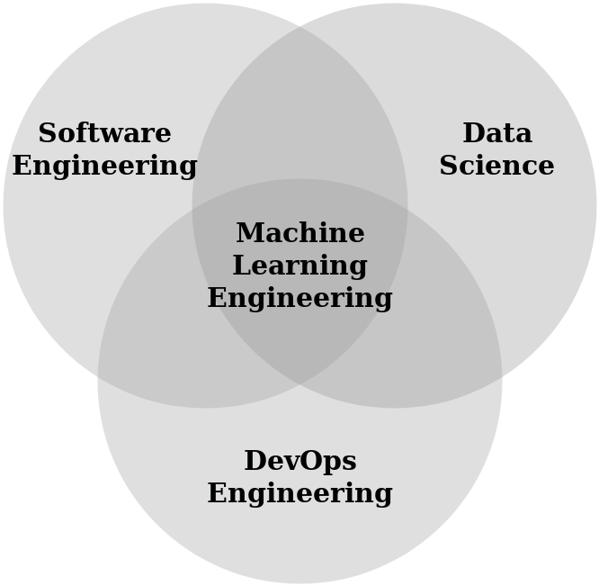
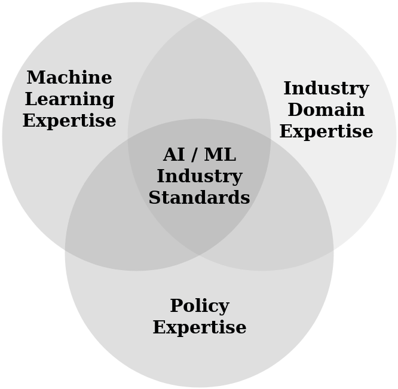
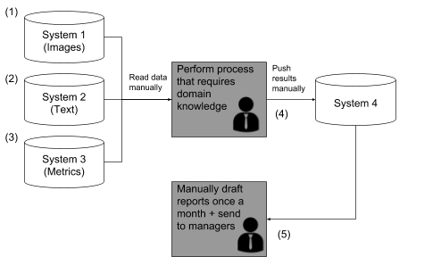

AI-RFX Procurement Framework v1.0
Online Version for the AI Request for Proposal Template, AI & Machine Learning Solutions.
0 - Introduction
0.1 - Overview
The “AI Request for Proposal v1.0” is part of the AI-RFX Procurement Framework. The objective of this document is to empower industry practitioners looking to procure AI systems. It should serve as a guide and a reference when putting together a tender or when procuring a machine learning solution. This template should also serve as a guide for suppliers that are looking to put together a proposal for a machine learning solution. This way suppliers can ensure they are following best practices in responsible machine learning development.
This AI-RFP template has been built using our “Machine Learning Maturity Model” as its core, which is available for download at our website. The “Machine Learning Maturity Model” goes beyond the machine learning algorithms themselves, and provides an assessment criteria to evaluate the maturity of the infrastructure and processes around the algorithms. The concept of “Maturity” is not just defined as a matter of technical excellence, scientific rigor, and robust products. It also essentially involves responsible innovation and development processes, with sensitivity to the relevant domains of expert knowledge and consideration of all relevant direct and indirect stakeholders.
All the frameworks under the AI-RFX Procurement Framework, including the “AI Request for Proposal”, the “Machine Learning Maturity Model”, and the “AI Tender Competition” templates have been released as fully open source. This allows suppliers and companies to contribute and update these templates, helping raise the bar for AI safety, quality and performance.
0.2 - About Us
The Institute for Ethical AI & Machine Learning is a UK-based research centre that carries out world class research into responsible machine learning systems. We are formed by cross functional teams of applied STEM researchers, philosophers, industry experts, data scientists and software engineers.
Our vision is to mitigate risks of AI and unlock its full potential through frameworks that ensure ethical and conscientious development of intelligent systems across industrial sectors. We are building the Bell Labs of the 21st Century by delivering breakthrough contributions through applied AI research. You can find more information about us at https://ethical.institute.
0.3 - Motivation 
There is currently a growing number of companies that are working towards introducing machine learning systems to automate critical processes at scale. This has required the “productisation” of machine learning models, which introduces new complexities. This complexity revolves around a new set of roles that fall under the umbrella of “Machine Learning Engineering”. This new set of roles fall in the intersection between DevOps, data science and software engineering.

To make things harder, the deployment of machine learning solutions in industry introduces an even bigger complexity. This involves the intersection of the new abstract “Machine Learning Engineering” roles, together with the industry domain experts and policy makers.
Because of this, there is a strong need to set the AI & ML standards, so practitioners are empowered to raise the bar for safety, quality and performance around AI solutions. The AI-RFX Procurement Framework aims to achieve the first steps towards this.
0.4 - How to use this document
0.4.1 - Using as reference
Many procurement managers may already own internally-approved RFP templates or RFP portals with standard entries. If that is the case, this document can be treated as a reference to obtain insights from key sections specific to machine learning, such as “Chapter 3: Tender Process” and “Chapter 4: Detailed Scope”. The machine learning specific sections in this document include:
0.4.2 - Structure
The document consists of multiple chapters, each chapter with a set of sections. The text in the sections is meant to be replaced completely, and it consist of:
-
An explanation of what the section should contain
-
An example of what it the section could look like
0.4.3 - Example
Each section has an example. The example is consistent throughout the document, and it is around a fictitious company called “Manufacturing Group Limited”. The objective is to provide a broad and generic example that covers multiple useful areas which companies can relate to. In this specific example, the company is looking for a machine learning system that performs predictive maintenance and data analysis automation on a fictitious end-to-end internal process.
0.4.4 - When to use
This template is relevant primarily for the procurement of machine learning systems, and hence it is only relevant when looking to automate a process that involves data analysis that is too complex to be tackled using simple RPA tools or rule-based systems.
0.5 - Template vs Reality
This document should serve as a guide. Especially for smaller projects, the level of detail required may vary significantly, and some sections can be left out as required. This template attempts to to provide a high level overview on each chapter (and respective sections) so the procurement manager and suppliers can provide as much content as reasonable.
Each company putting together a procurement process will have different set of requirements, and unfortunately this is not a “one-size-fits-all” document. The main purpose of this document is to raise the bar both in industry and technology, and provide key industry stakeholders with a solid basis to start from. Also, it’s free.
0.6 - Open Source License - Free as in freedom
0.6.1 - Open source License
This document is open source, which means that it can be updated by the community. The motivation to release this as open source is so that it is continuously improved by the community. This will ensure that the standards for safety, quality and performance of what is expected in machine learning systems will keep increasing, whilst being kept in check on a realistic level by both suppliers and companies.
0.6.2 - Contributing.md
The Institute for Ethical AI & Machine Learning’s AI-RFX committee is in charge of the contributing community for all of the templates under the AI-RFX Procurement Framework. Anyone who would like to contribute, add suggestions, or provide example and practical uses of this template, please contact us through the website, or send us an email via a@ethical.institute.
0.6.3 - License
This document is registered under this MIT License (raw file), which means that anyone can re-use, modify or enhance this document as long as credit is given to The Institute for Ethical AI & Machine Learning. It also includes an “as is” disclaimer. Please read the license before using this template.
Request for Proposal Template Begins Here:
Example company name: MANUFACTURING GROUP LIMITED
Example AI-RFP for Machine Learning Automation System
Issued on: 00/00/2019
Issued by: Person’s Name
Reference Number: #REFNUMBER
1 - Our Company
This chapter contains a high level overview about the company that is setting up the tender process.
1.1 - Company Overview
This section should provide a brief overview of the company. It may also be worth adding insights on the company’s commitments and efforts in the field of AI.
|
Example Company Overview for “Manufacturing Group Limited” Manufacturing Group Limited is an OEM manufacturing company that was set up in 1992, we are a large manufacturing group with a large number of suppliers. We operate machinery across over 10 countries across the world. The quality of our machines is the highest amongst our competitors, and the processes we have created around maintenance & operations are the most advanced in the industry. We have a commitment of £100m during the next 5 years to introduce machine learning into our company to improve the quality and efficiency of our processes, and enable our staff to focus on more important higher level tasks. |
1.2 - Key Facts
This section should contain 5-10 key facts about the company. Similar to the brief overview, it may be worth adding some key facts about the current focus as an organisation towards the area of artificial intelligence and machine learning.
|
Example Key Facts for “Manufacturing Group Limited”
|
1.3 - Values
List your company values as relevant to ensure suppliers are aware.
|
Example Values for “Manufacturing Group Limited”
|
1.4 - Responsibility Commitment
This section requests suppliers to ensure they follow the 8 Principles for Responsible Machine Learning development. The 8 commitments are implemented in this framework through the Machine Learning Maturity Model, and they are implicit on each section.
We suggest you use a variation of the default example provided below.
|
Example Responsibility Commitment This request for proposal requires all suppliers to follow the 8 principles for responsible machine learning defined by The Institute for Ethical AI & Machine Learning. The 8 principles state best practices in each area, and as it is stated, they don’t always have to be implemented in every project, but when this is the case it should be an explicit decision not to.
You can find the Machine Learning Principles by The Institute for Ethical AI & Machine Learning at https://ethical.institute/principles.html |
1.5 - External Links
This section should contain links relevant for suppliers and solution providers. Some sample links are provided which reference to some of the points covered in this document, including website address, reference to background knowledge, and links to domain specific requirements.
|
Example Process Overview for “Manufacturing Group Limited”
|
2 - Requirements Overview
The objective of this chapter is not to propose the solution desired, but to provide details on the end-to-end process and/or challenge identified within the company. As mentioned in the introduction, given that this RFP is specific to machine learning solutions, the ideal way to explain the challenge/process is through the flow of data across the entire process, including transformations, stakeholders involved, systems, and data-sources. This is because machine learning solutions are used to automate the analysis of data, and hence this would provide suppliers with a good understanding on all the steps that surround the data itself.
This chapter has been put together using the Machine Learning Maturity Model assessment criteria. Each section takes into consideration each of the criteria implicitly. It is recommended to take into consideration all the 8 assessment criteria when putting together this section.
2.1 - Key objectives & outcomes
This section is one of the most important in this chapter. This section should provide a high level overview of what are the tangible outcomes desired as outputs of a successful tender process. The idea is for this section to provide high level objectives / KPIs. Later on, Section 2.6 - Target improvements and metrics focuses on lower-level quantifiable metrics that relate to each of the high level objectives / KPIs in this section.
Points to include in this section include:
-
High level reason why process/challenge is being tackled
-
Key improvement areas (e.g domain expert time freed, reduction of errors, improvement of inefficient process, etc)
-
Type of high level services or qualities that are sought in suppliers being procured
|
Example Aims & Objectives for “Manufacturing Group Limited”
|
2.2 - Process/challenge overview
This section should contain a concise and high level description of the process / challenge that the organisation has identified which needs to be automated or improved. As mentioned at the beginning of the chapter, the overview should focus on the flow of the data across the steps throughout process. Once again, the reason for this is because machine learning use-cases in industry are for (full or partial) automation of data analysis -- whether for business insights or process automation.
Providing in-depth information on the current flow of data will allow suppliers to use their expertise to how and to what extent their solution will be able to automate the process, whether full or partial automation.
The key questions that should be covered in this section include:
-
What are the data-sets and data-sources involved in the process?
-
Who are the stakeholders involved?
-
What are the approximate/high-level volumes processed?
-
How common are human/system errors?
-
What are the inefficiencies that were identified?
Below is an example of how these questions can be answered in a high level summary.
|
Example Process Overview for “Manufacturing Group Limited”
|
2.3 - Process Detail
This section covers the process into detail. It still focuses mainly on the data-flow, but provides a much more in-depth overview for the following 4 areas:
-
Dataset overview
-
Stakeholder overview
-
Workstreams overview
-
Step by step workstreams breakdown
2.3.1 - Dataset Overview
This subsection should provide information about the datasets involved across the end-to-end process. There should be a brief overview of the systems and/or data-sources where the datasets are stored and/or processed. There should also be a high level overview of what the datasets consist of. “Chapter 4: Detailed Scope” covers the systems and the datasets into much more detail with samples and documentation where relevant.
The table below provides an example of 6 datasets across 3 systems:
|
Example Datasets Overview for “Manufacturing Group Limited” Datasets involved:
|
2.3.2 - Stakeholder Overview
This subsection should provide an overview of the stakeholders that are involved throughout the end-to-end process, including:
-
Name of the type of stakeholder
-
Brief description
-
Whether stakeholder is a domain expert or staff (more on this below)
This subsection should outline which stakeholders are “Domain Experts”. The “Domain Experts” are the stakeholders that use domain-specific or expert knowledge to analyse data. Often the Domain Experts need to be available for suppliers to answer questions, as suppliers may need to obtain insight about how the data is analysed or how the systems are used, so the right machine learning solution can be proposed.
The example below covers 4 stakeholders, three of which are domain experts and perform complex analysis on the datasets.
|
Example Stakeholder Overview for “Manufacturing Group Limited” Stakeholders involved in the process:
|
2.3.3 - Workstreams Overview
The end-to-end process often may consist of multiple different independent or dependent workstreams. This step requires an overview of the workstreams that constitute the process. Each workstream should contain the following information:
-
High-level description of each workstream
-
Order in which workstreams are executed, or alternative whether they are not dependent on each other (i.e. parallel or sequence).
Below is an example with 2 parallel workstreams:
|
Example Workstreams Overview for “Manufacturing Group Limited” In this process there are two workstreams identified, which are independent of each other and are executed in parallel, but at a different frequency.
|
2.3.4 - Step-by-Step Workstreams Breakdown
This subsection should contain every step for each workflow identified across the end-to-end process. Each step provided should contain the following where relevant:
|
# |
Name |
Description |
|
1 |
Stakeholders |
All the stakeholders involved in this step |
|
2 |
Datasets |
All the datasets that are retrieved, transformed or created - ideally one action per step |
|
3 |
Systems |
The systems that are used to retrieve, transform or save data |
|
4 |
Actions |
Actions performed by stakeholders or systems, generally around the data, but also could be different |
(*) Don’t forget
It is important to make sure that there are no steps that are missed -- especially the following points:
-
Detailed steps required to extract the data from the systems
-
The domain expert analysis/transformations that are performed in the data involved
-
New creation of datasets which could be as small as adding results to a system or writing a report
The example below covers an overview of the first workstream outlined in the example above.
|
Example Step-by-Step Workstreams Breakdown for “Manufacturing Group Limited” The granular step-by-step process for the FIRST workflow, machine evaluation is as follows:
|
2.4 - Diagram of workstreams
This section should provide a visual diagram to outline the current process and more specifically the interactions between its constituent workstreams.
Given the complexity of some of the workstreams, especially where there is dependency or conditional branches, there is a lot of clarity that would be gained through a visual diagram. The diagram should add emphasis on the flow of the data, and provide an insight of what actions are carried out on each step.
The example below is a simple overview of both of the workstreams visualised. This is a simplification of the process - in more complex proposals, it may be important to provide more granular detail, and potentially different diagrams.
|
Example Diagram of Workstreams for “Manufacturing Group Limited” The current workflow for domain-specific analysis on the data mentioned is depicted at the end of this section. The diagram below provides a high level overview of the data sources involved, together with all the data formats that are extracted, created and pushed back into systems. The datasets involved as labelled in the image are as follows:
 |
2.5 - Key target metrics
This section provides the benchmarks gathered from the process, together with the ideal targets, which should be aligned with the high level objectives provided in Section 2.1 - Key objectives & outcomes.
In practice, it may be hard or near impossible to measure accurate benchmarks, however it is possible to relax constraints to obtain higher level metrics that would still be useful for suppliers. The example in this section provides an overview of some metrics that can be collected. This section is directly addressed in “Assessment Criteria #1 - Practical Benchmarks” of the “Machine Learning Maturity Model”.
2.5.1 - Current benchmarks & metrics
This section should provide benchmark metrics that are gathered from the process. These will allow suppliers to have a base for benchmarking their proposed metrics. Some common metrics for benchmarking are covered below.
|
Name |
Description |
|
Time |
Time taken from start to end of process, broken down by workstream where relevant. |
|
Volumes |
The expected number of instances the process will be executed per day, month or year (as relevant), with the relevant granularity (number of datasets involved in each layer) |
|
Accuracy / Error frequency |
(*) Accuracy will be one of the most important pieces in this template. This is covered in more detail below, and it is directly aligned with metric #6 in the Machine Learning Maturity Model. |
|
Resources |
This should contain information about the resources required to have the process operational, such as stakeholders. |
|
Costs |
Costs can include operation costs, but also the costs of an error in a specific part of the process. |
(*) Accuracy metrics
As it is mentioned in the Machine Learning Maturity Model, it is critical to consider what practical accuracy metrics make sense for each project. Often projects consider only simple accuracy (i.e. number of correct cases / total number of cases). However it is often necessary to take into consideration what types of errors are the most critical in the specific project. Some of these considerations include:
-
A case that should have been correct but was missed (Type I Error / Recall)
-
A case that was incorrectly marked as correct (Type II Error / Precision)
Below is an example that contains high-level metrics for the first workstream. For more detail on this section, please refer to the “Machine Learning Maturity Model”.
|
Example Benchmarking for “Manufacturing Group Limited” The benchmarking results that we have compiled on the workstreams where put together through the following process:
The resulting benchmarks are as follows:
|
2.5.2 - Target improvements & metrics
Each of the targets in this subsection should link to a high level objective provided in Section 2.1 - Key objectives & outcomes, and should reference the metrics in the previous Subsection 2.5.1 - Current benchmarks & metrics. The points to cover in this subsection should include the following:
|
Section referenced |
Description |
|
Requirements |
The requirements can be functional or non-functional requirements that can be directly related to features that require user-friendliness, but also it could be more specific requirements such as integrations with user management systems, or the ability to extend the platform in case there is an in-house team of experts that has the skills. |
|
Process |
The process steps can be referenced to mention what the ideal level of automation would be. This could be full automation or partial automation. It’s also possible to reference some of the workstreams and mention which ones should be automated. |
|
Benchmarking |
Each of the metrics can be referenced with an ideal decrease or increase. |
|
Example Target improvements and metrics for “Manufacturing Group Limited” The ideal solution would have the following:
The ideal solution would show a quantifiable improvement in benchmarks provided as follows:
In order for a solution to be viable, we need to see at least a 70% in overall cost reduction within the first 3 years. |
3 - Tender Process
This chapter introduces suppliers to the end-to-end tender process that they will have to go through during procurement. This chapter has been put together using the Machine Learning Maturity Model assessment criteria. It is recommended to take into consideration all the 8 assessment criteria when putting together this section. Each section in this chapter takes into consideration each of the criteria implicitly, and Section 3.2 - Assessment criteria addresses the Machine Learning Maturity Model explicitly.
3.1 - Key point of contact
This section should have the contact details of the person or people that are in charge of the day to day communications for this project. This ideally will be an individual that is well connected with the relevant stakeholders in the organisation. At the same time, it has to be someone that will have the time to dedicate to perform the delivery, communications and internal championing of the solution.
If the key point of contact is not able to engage internally or externally in an efficient way for any reason (whether not enough time committed, not enough resources or slow response from other departments) the success of the project may be affected. It is critical that the key point of contact and the team are able to work closely together as necessary for the project.
|
Example Key point of contact for “Manufacturing Group Limited”
|
3.2 - Assessment criteria
This section provides an insight on the criteria that can be used to evaluate the proposals. The criteria contains multiple areas, but the core is reflected in the Machine Learning Maturity Model assessment criteria.
The table below contains an overview of common criteria that is used to assess a proposal:
|
Criteria |
Description |
|
Competition results |
This criteria covers the results obtained by the supplier during the optional competition, which is covered in Section 4.1 - Competition. Often there is a minimum bar set, and if a supplier doesn’t pass it is not considered. |
|
Machine Learning Maturity Model |
The Machine Learning Maturity Model is the assessment criteria proposed to evaluate the maturity of a machine learning solution. The maturity model is available for free download at our website, and consists of the following 8 criteria:
|
|
License & service terms |
This criteria covers the terms that revolve around the legal terms around the solution. This includes the terms of the license, including the service-level-agreements, security questionnaires, maintenance terms, etc. |
|
Costs |
This includes the total costs of the technology, together with the proposed improvements in the process itself |
The example below provides a high level overview of assessment metrics that reference the machine learning maturity evaluation.
|
Example Assessment Criteria for “Manufacturing Group Limited” The suppliers will be evaluated using the criteria outlined below. Scores will be weighted and then brought together to form total qualitative rating for your proposal. This will then be reviewed in conjunction with the commercial pricing submission to form an overall view. The scoring metrics that will be used for each criteria are:
The suppliers will be evaluated on the following criteria:
|
3.3 - Evaluation team
This section should have details on the stakeholders that will be involved in the evaluation process, and the way each of the criteria will be evaluated. This will provides suppliers with an understanding of what are the skills and domain specific knowledge in the evaluation board, and will ensure suppliers add extra (or less) background knowledge / explanations as relevant.
Below is an example of what the evaluation team could consist of, and what each of the members will evaluate.
|
Example Evaluation Process for “Manufacturing Group Limited”
|
3.4 - Short-List Negotiations
Once the supplier has been selected, the framework agreement, statement of work and relevant contracts should be drafted, and finalised with the deadline provided. This section should contain information about what is expected from the chosen supplier. Commencement dates, as well as timelines should also be drafted.
|
Example Short-List Negotiations for “Manufacturing Group Limited”
|
3.5 - Project timeline
This section should provide a key breakdown for the milestones expected. Some of the deadlines and timelines would vary depending on the complexity of the project, but some standard dates that should be included are provided below. Besides providing these external deadlines for suppliers, it’s also important to set up internal deadlines and allocate the right responsibilities to be able to meet the necessary requirements when interacting with suppliers at each stage.
Below is a set of the most common points to ensure are covered, and each of them are linked to a sub-section in this section.
|
Activity |
Description |
|
Issue of RFP Documentation |
This date would require all supporting documents relevant to the RFP. If there is a competition being ran, this would also include further instructions required for this, together with the data correctly labelled as relevant. |
|
Suppliers Questions Due |
Suppliers should be able to submit questions about the proposal. This is often done through a portal or sending an excel file. Often the answers of suppliers are made public to all other suppliers so that all suppliers are able to have the same context when proposing the solution. |
|
Supplier Proposals Deadline |
This is the deadline for the proposals. If there is an ongoing competition in place, extra deadlines may apply, such as potential evaluation day, or requirement to provide access to the solution to run an unseen test-case for evaluation. |
|
Short-list announcement |
The selected short-list suppliers are notified and invited to participate in further negotiations which may require changes in the initial proposals. Suppliers that are not selected are also notified. |
|
Preferred supplier notified |
Once the preferred supplier is selected, the offer and contract are sent, which should provide a the framework agreement together with the relevant statements of work required, as well as SLAs, license terms, etc. |
|
Contract drafted & signed |
It’s worth also having a deadline for contract signing to make sure the process doesn’t drag out. |
|
Project kick-off date |
The project kick-off date should be agreed beforehand, and updated depending on changes on scope that may have arisen |
|
Example Project Timeline for “Manufacturing Group Limited”
|
3.6 - Issue of RFP Documentation
This section contains an overview of all the documents that the suppliers will receive with the documentation.
|
Example Issue of RFP Documentation for “Manufacturing Group Limited” Manufacturing Group Limited will be sending all suppliers the following documentations on the issuing date:
|
3.7 - Supplier questions due
This section should cover instructions of how suppliers should submit questions. Some of the points that are advised to have include:
-
Suppliers are able to see each other’s questions and answers
-
Clear deadline that reflects the one provided in the previous section
-
Instructions for suppliers to submit the questions
-
Specific points where answers cannot be provided for any reason
|
Example Suppliers questions due for “Manufacturing Group Limited”
|
3.8 - Supplier proposals deadline
This section provides details on how the suppliers should submit the proposals to the company (portal, email, etc). This should also cover whether extensions can be made for suppliers.
|
Example supplier proposals deadline for “Manufacturing Group Limited”
|
3.9 - Short-list negotiations
This section should contain information for suppliers to understand what they are expected to do during and after the short-list announcement. The three main points are outlined in the table below:
|
Activity |
Description |
|
Feedback |
The level of feedback that will be given to successful and optional unsuccessful suppliers |
|
Negotiations and proposal amendments |
Short-listed suppliers are often expected to receive feedback that will require changes on their initial proposals. This section should cover what the expected next steps will be. |
|
Example short-list negotiations for “Manufacturing Group Limited”
|
3.10 - Preferred supplier contract drafting
This section should contain information for suppliers to understand what the successful supplier and unsuccessful short-listed suppliers are supposed to do. The main points covered are provided in the table below.
|
Activity |
Description |
|
Notification channel |
How suppliers will be notified of the short-list and actions |
|
Feedback |
The level of feedback that will be given to the preferred supplier and unsuccessful short-listed suppliers |
|
Next steps |
High-level instructions of what selected supplier should go forward - this will mainly consist of drafting and finalising all contracts |
|
Short-listed supplier terms |
If there are any terms where it is desired to have other suppliers potentially involved at a later date, or if there is the potential of having short-listed proposals valid for a longer period of time |
|
Example preferred supplier contract drafting for “Manufacturing Group Limited”
|
4 - Detailed Scope
This chapter contain an overview of what requirements supplier proposals are expected to contain. The structure of this chapter was obtained from the most common stages identified in RFPs for machine learning solutions, which are outlined in the table below:
|
Phase |
Description |
|
Proof of concept competition |
In the context of machine learning systems, suppliers are often required to compete against each other by evaluating the performance of their solutions based on the client’s data and feature requirements. For smaller procurement processes, this could be a more informal evaluation such as trying out multiple different systems, but for larger tenders there is a requirement for formal processes. This document provides an example of best practices when running a competition to evaluate machine learning based solutions. |
|
Productisation |
Suppliers should provide detailed insight on the work that still needs to be carried out for the solution to be operated fully in production. This includes further development on the proof of concept, enterprise integration, training and even operational transformation required for the system to be in production. This is often a one-off service, and should include the resources and timelines required to be carried out successfully. |
|
License |
The licensing overview provides an insight of contract length, service-level-agreement, volumes, limits, training included. |
|
Further Services |
This encompasses an overview of the costs and resources required to extend the systems that have been deployed. |
This chapter has been put together using the Machine Learning Maturity Model assessment criteria. Each section takes into consideration each of the criteria implicitly. It is recommended to take into consideration all the 8 assessment criteria when putting together this section.
4.1 - Competition
This section contains the instructions, documentation and datasets required for the suppliers to be able to carry out the competition. It’s important that the competition is representative of the challenge presented, and that it references the right areas in “Chapter 2 - Our Process”, in order for suppliers to get complete context.
The details to put together a strong competition for suppliers are covered in the “AI Competition Tender” template which can be downloaded from the website. However, below there is a high-level process outlined on how competitions can be set up.
In summary, the generic process required to prepare a competition for a machine learning system, it requires the following steps:
-
For the end-to-end process, identify the datasets used (as outlined in chapter 2)
-
For more complex challenges, you will require more examples
-
-
Identify the final insights or decisions that are inferred from these datasets
-
This often requires manual work, as it’s important that the datasets come together with the answers that are expected to be predicted by the ML models
-
-
Split the data into a TEST dataset, and an EVALUATION dataset
-
Each contains the datasets and answers
-
-
Give the TEST dataset to the suppliers so they build a machine learning model
-
Evaluate the suppliers with the evaluation set
There are key points that need to be taken into consideration, including:
-
Evaluation metrics should go beyond accuracy (precision, recall, etc)
-
The expertise required to operate the system
-
The work required to get to that level of accuracy
-
Access to domain experts as relevant for suppliers to obtain understanding on datasets and ways of analysing datasets
|
Example Competition for “Manufacturing Group Limited” Overview
Evaluation Metrics
Evaluation Process
|
4.2 - Locations
This section should contain information about the exact locations where the system will be installed, as well as the locations where the system will be used in order to provide an idea of the support timetable required.
|
Example Locations for “Manufacturing Group Limited” Please find below a table of the locations of the offices requiring these goods and services:
|
4.3 - Implementation
4.3.1 - Data-source information
This section contains an overview of the all the data-sources where the data comes from. The two main approaches for integration of suppliers is push and/or pull systems. This means that either supplier systems can pull from the company’s systems, or alternatively the company can push to the supplier’s APIs. If there is preference, this should be the section where it should be covered. If it is expected for suppliers to integrate with the company’s systems, this section should contain a high level overview of the datasets in the system.
|
Example Data-source information for “Manufacturing Group Limited” The three main data-sources are provided in the table below. We expect suppliers to integrate to all of our systems individually and poll every hour for new content. We expect suppliers to have a way to keep track of the machines that have already been processed. We also expect the system to be able to notify the relevant stakeholder through our MyERP system.
|
4.3.2 - Infrastructure Available
This section should cover the infrastructure that is available for suppliers to perform the deployment of their platforms. Example infrastructure available can be:
-
Physical servers that can be provisioned for the supplier
-
Container infrastructure (Kubernetes / Openshift Cluster)
-
Preferred cloud provider (Google cloud, AWS, Azure, etc)
-
Hadoop-based infrastructure
There should also be information about the known limitations and constraints that suppliers will require, such as maximum RAM or Video memory. Although not always, machine learning computations may be quite heavy, so it’s important that this is made explicit by suppliers.
|
Example infrastructure available for “Manufacturing Group Limited” We have a simple physical server architecture, but we are currently moving towards cloud. Initially suppliers will only have access to one server with 60GB RAM, however we expect to migrate by mid-next year. Suppliers should include in their proposal a migration plan together with complexity and costs. |
4.3.3 - Detailed supplier information
This section should consist of a list of points that suppliers should make sure they include with their proposals. The example provided contains a table with a set of commonly required sections that are expected in supplier proposals.
|
Example detailed supplier evaluation for “Manufacturing Group Limited” We expect suppliers to go into detail on their implementation requirements, and cover at least the points mentioned in the table below.
|
4.4 - IP Ownership
This section should provide an overview of what are the expectations of IP ownership to be in place. This may vary depending on how much custom development is being requested by the suppliers, however a common standard in industry is provided in the example below.
|
Example IP Ownership for “Manufacturing Group Limited” The high level requirements stated by Manufacturing Group Limited in regards to IP ownership are as follows:
|
4.5 - Key Contract terms
This section should provide an overview of key term metrics in the contract/license.
|
Phase |
Description |
|
Length |
Length of the contract |
|
Renewal |
Process for contract to be renewed |
|
Cancellation |
Terms for company or supplier to cancel agreement, together with timelines |
|
Example Contract Terms (High Level) for “Manufacturing Group Limited”
|
4.6 - Required service levels (SLAs)
This section should contain the service level agreements that the suppliers should abide by. This would comprise of:
-
Definition of issue levels (critical, severe, small), together with:
-
Response timeframe
-
Bug fix timeframe
-
Permanent fix timeframe
-
-
Recovery point objective
-
Recovery time objective
-
Support locations and languages
-
Support portal from supplier (Helpdesk, portal, email, etc)
The reason why machine learning accuracy is not added in this list, is because it is often too ambiguous to define an actual number as an umbrella. Often the definition of the types of issue cover in part the point of accuracy indirectly, as the system would become non-functional if the accuracy decreases significantly. If there are constraints in the SLA defined for accuracy, it should be approached with care by both company and suppliers, as if not taken a high-level approach, it may lead to a more brittle agreement that may affect negatively the suppliers or the company (or both).
|
Example Required Service Levels for “Manufacturing Group Limited” We require our suppliers to provide us with a SLA consisting of the following points:
|
4.7 - Financial and company information
This section should outline the company information that suppliers need to provide in their proposals. RFP authors should be aware when setting the minimum financial requirement timelines, as there may be less mature startups that would not be able to take part in the tender process.
|
Example Financial and Company information for “Manufacturing Group Limited”
|
4.8 - Sub-contracting
This section should outline whether subcontracting is expected for suppliers. Depending on requirements,
|
Example Sub-contracting for “Manufacturing Group Limited” The supplier shall not subcontract any aspect of the service without prior written consent from Manufacturing Group Limited, whose consent shall not be responsibility of the supplier to ensure all subcontractors have received the necessary security clearance and training, where appropriate. |
5 - Contractual terms & conditions
5.1 - Legal conditions
This section should contain information about the contract that will be used. It may be best practice to share a link to a contract, or provide a template for suppliers to add comments in the first or second phase of the procurement process.
|
Example legal conditions for “Manufacturing Group Limited”
|
5.2 - Validity
This section should contain information on the validity of the proposals, commercial offers, etc.
|
Example validity for “Manufacturing Group Limited” Suppliers agree that by participating in this process, any proposals or commercial offers shall remain valid for a minimum of 90 days |
5.3 - Limited liability
This section should provide information about the liability for the company and the suppliers.
|
Example limited liability for “Manufacturing Group Limited” Manufacturing Group Limited accepts no liability for any of the costs associated with your response to this invitation to tender. Suppliers are therefore not entitled to compensation from Manufacturing Group Limited for any time, effort or expense incurred in preparing bids. You should only respond to this document in this basis. Manufacturing Group Limited reserves the right to:
|
5.4 - Confidentiality
This section should contain the confidentiality agreement that suppliers must agree in order to work with the company. The example below assumes there is an external NDA that was previously signed by suppliers. This may be required depending the confidential nature of the project.
|
Example Confidentiality for “Manufacturing Group Limited”
|